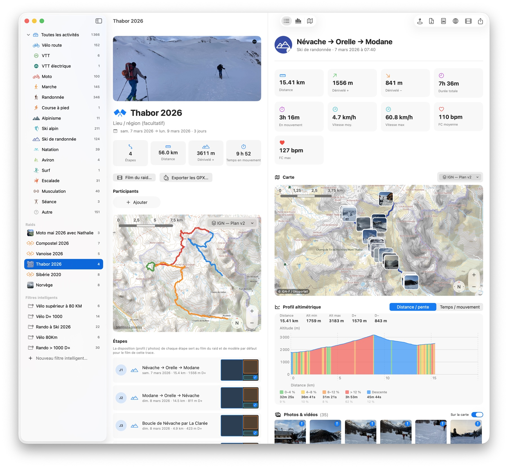

Rassemblez vos traces
Import universel
GPX, FIT et TCX par glisser-déposer, avec détection du type d'activité et dédoublonnage.
Synchro Strava
Importez tout votre historique, puis récupérez les nouvelles sorties à la demande.
Apple Santé
Récupérez les activités enregistrées par l'iPhone et l'Apple Watch.
Bibliothèque iCloud
Traces et réglages synchronisés entre vos Macs, fichiers classés automatiquement.

Visualisez & analysez
Cartes IGN
Fonds SCAN 25, Plan v2 et carte des pentes — plus fonds monde et satellite.
Profil altimétrique
Altitude ou vitesse, pente colorée et fréquence cardiaque, survol synchronisé carte ↔ profil.
Statistiques
Distances, dénivelés et temps par période et activité, comparaison d'années, records.
Vue d'ensemble
Toutes vos sorties sur une même carte, filtrables par activité, période et distance.
Segments
Découpez une trace en portions nommées — par distance, temps ou phase — avec leurs stats.
Filtres intelligents
Des dossiers dynamiques façon Mail et Finder, qui se remplissent selon vos règles.
Racontez & partagez
Raids multi-jours
Regroupez les étapes d'un séjour, avec participants, dates et statistiques cumulées.
Photos & vidéos
Géolocalisées sur la carte et le profil, avec position ajustable le long du parcours.
Film du parcours
Une vidéo animée de la trace, avec vos photos et vidéos placées au bon endroit.
Export & partage
GPX, PDF, image, page web interactive et Share Sheet macOS (Mail, Messages, AirDrop…).
Vos montagnes méritent mieux qu'un dossier de fichiers.
Une app macOS native, pensée pour qui collectionne les sorties au fil des années.
Découvrir un exemple